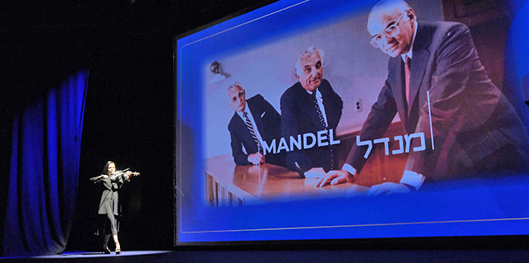
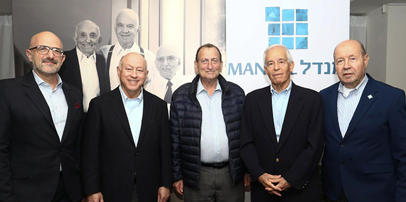
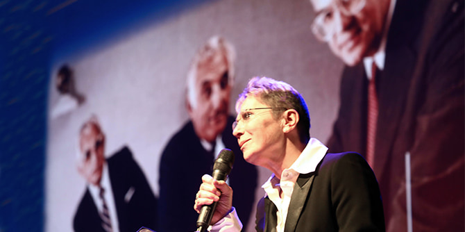
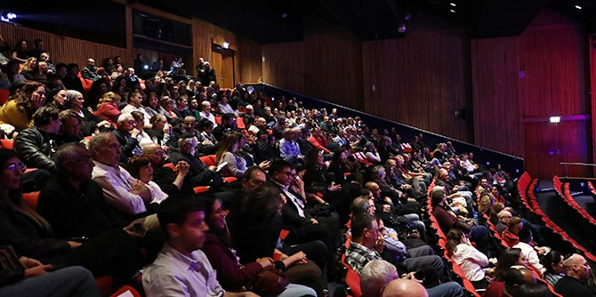

הכנרית אירינה שקליאר (צילום: סיון פרג')
בסוף חודש פברואר התכנסו חברי קהילת מנדל המורחבת במוזיאון ארץ ישראל בתל אביב להקרנת הבכורה של "מנדל" – סרט תיעודי על חייו, פועלו וחזונו של
מורטון ל' מנדל, מייסד קרן ג'ק, ג'וזף ומורטון מנדל והיו"ר הראשון שלה. הסרט מעורר ההשראה משלב ראיונות עם עמיתיו של מורטון מנדל ועם הנהגת קרן מנדל, צילומי ארכיון וכן תיעוד פועלם של כמה מן הבוגרים הבולטים של תוכניות המנהיגות של הקרן בישראל.

משה ויגדור, פורפסור יהודה ריינהרץ, רון חולדאי, סטיבן הופמן והבמאי גלעד טוקטלי (צילום: סיון פרג')
באירוע החגיגי השתתף
פרופסור יהודה ריינהרץ, נשיא ו-CEO קרן מנדל;
סטיבן הופמן, יו"ר הקרן;
משה ויגדור, מנכ"ל קרן מנדל-ישראל;
גלעד טוקטלי, במאי הסרט; חברי כנסת, שרים לשעבר, ראשי ערים, ראשי רשויות ובעלי תפקידים בכירים באוניברסיטאות מובילות בישראל; וכן חברי סגל, עובדי הקרן, עמיתים ובוגרים. את הערב ארגנה והנחתה גילה בן הר, שגם ליוותה את הפקת הסרט מטעם הקרן.

גילה בן הר (צילום: סיון פרג')
לפני הקרנת הסרט נשאו דברים פרופסור יהודה ריינהרץ, נשיא קרן מנדל, והבמאי גלעד טוקטלי, שסיפר על תהליך היצירה של הסרט: "ביצירת הסרט חווינו שורה של נסים קטנים, מעשה ידי אדם. הפקת הסרט, שארכה כשלוש שנים, נעה בין ישראל לקליבלנד, ארה"ב. אני מתגעגע לגיבור הסרט שלא הכרתי בחייו, שתמיד הקפיד לצטט את אמו וחי לאורם של הערכים שהנחילה לו ולאחיו: כנות, הגינות, טוב לב, נדיבות וחסד. אני מאמין בכוחן של מילים, ובימים אלו, יותר מתמיד, חובה עלינו להקשיב למשנתו ההומינסטית של מורט מנדל ז״ל״. סטיבן הופמן, יו"ר קרן מנדל, נשא דברי סיכום.

הקרנת הסרט (צילום: סיון פרג')
צפו בסרט המלא:
{kind=link}
{kind=link}
{kind=link}
{kind=link}